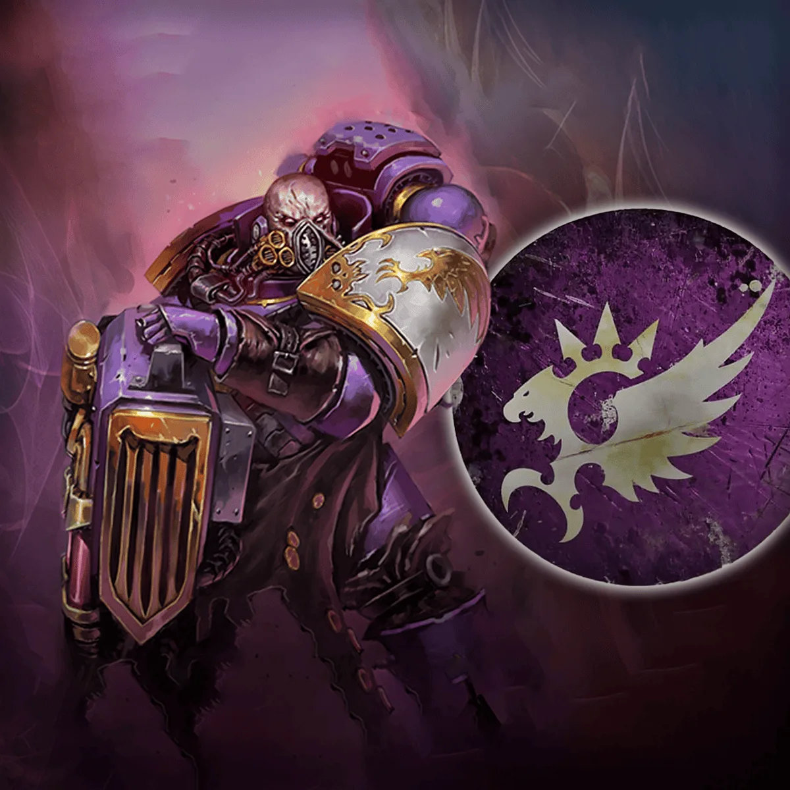
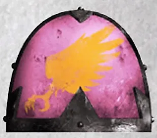
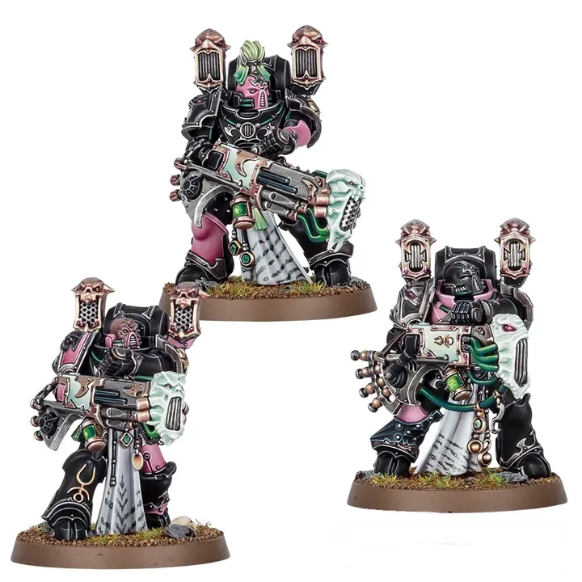
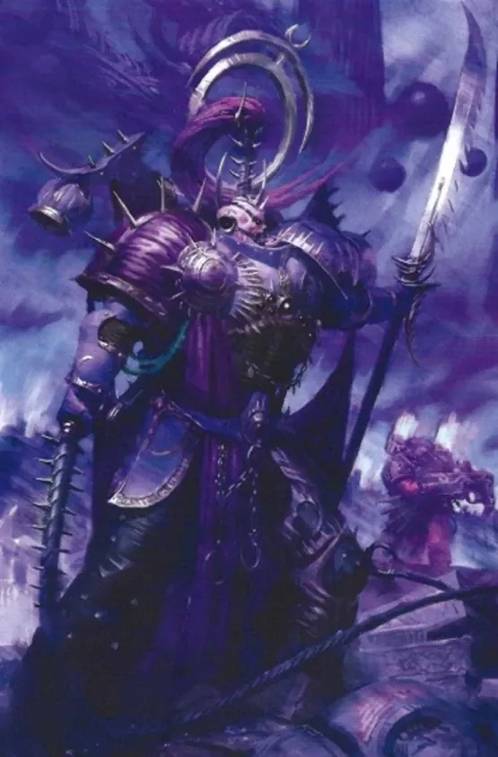
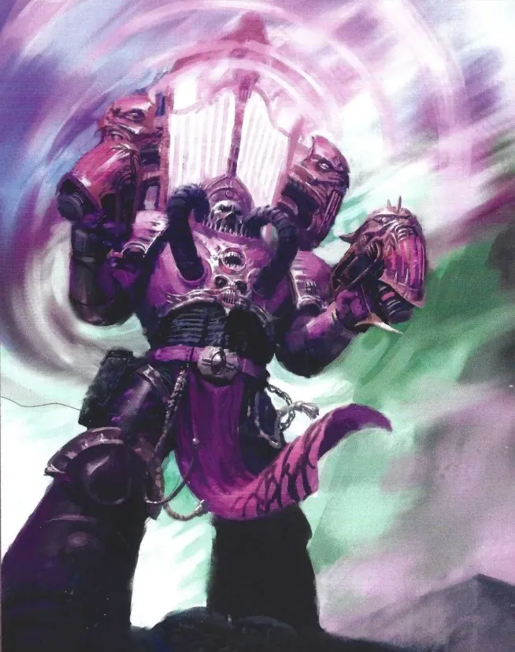
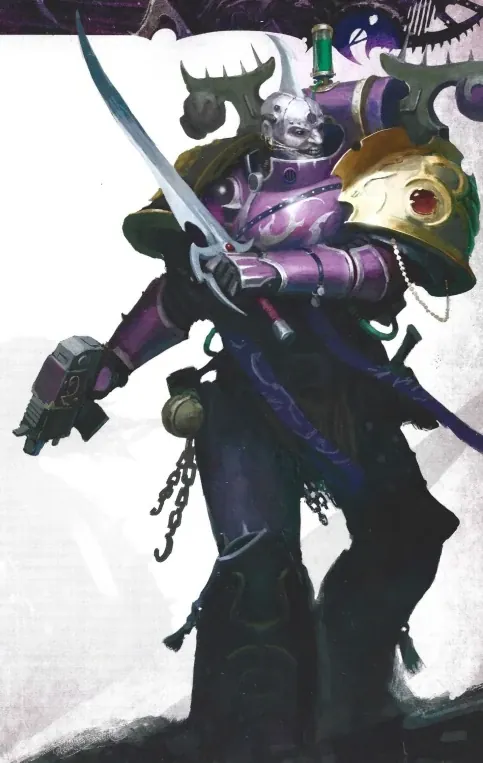

01ภาพรวม

ผู้แสวงหาความสมบูรณ์แบบที่หลงผิด — ตอนนี้แสวงหาความสุขและความเจ็บปวดขั้นสุดใต้ Slaanesh
02ต้นกำเนิด
Legion ที่ 3 ภายใต้ Fulgrim ได้เกียรติสวมนกอินทรีของจักรพรรดิ แต่ความหมกมุ่นในความสมบูรณ์แบบนำไปสู่ Slaanesh หลัง Heresy Legion แตกกระจายจากการต่อสู้ภายในและการปะทะกับ World Eaters ที่ Skalathrax
03เนื้อเรื่องเจาะลึก
Legion ที่ได้ใช้ Aquila
Emperor's Children เป็น Legion เดียวที่ได้รับเกียรติให้ใช้นกอินทรี Aquila ของจักรพรรดิบนเกราะ เพราะเคยช่วยชีวิตจักรพรรดิ แต่ความภาคภูมิใจนี้นำไปสู่ความหยิ่งผยองและการแสวงหาความสมบูรณ์แบบที่ไม่มีวันพอ
Laer และดาบต้องสาป
บนดาว Laer Fulgrim หยิบดาบที่มีปีศาจของ Slaanesh สิงอยู่ ปีศาจค่อย ๆ ควบคุมจิตใจจน Fulgrim ทรยศ และฆ่า Ferrus Manus ที่ Isstvan V
04ยุค 30K — ในยุค Great Crusade และ Horus Heresy

ยุค 30K เป็นแบบอย่างของความสง่างามและวินัย ได้รับเกียรติพิเศษจากจักรพรรดิ ก่อนตกต่ำเพราะดาบปีศาจของ Fulgrim
ดูภาพรวมยุค 30K ทั้งหมดที่ เนื้อเรื่องยุค 30K และความต่างของสองยุคที่ เปรียบเทียบ 30K vs 40K
05นิสัยและวัฒนธรรม
- เสพสุขทุกรูปแบบจนความรู้สึกปกติไม่มีความหมาย
- Noise Marines ใช้อาวุธเสียงที่ทำให้ศัตรูแหลกสลาย
- Fabius Bile นักวิทยาศาสตร์ที่ทดลองกับพันธุกรรม มาจาก Legion นี้
06จุดที่น่าสนใจ
- Lucius the Eternal: ผู้ที่ฆ่าเขาจะกลายเป็นเขา
- ศัตรูตลอดกาล: Iron Hands และ World Eaters
07ความสามารถพิเศษ
สิ่งที่ทำให้ Emperor's Children แตกต่างจากทัพอื่น — ทั้งพลังที่ติดตัวมาทั้งเผ่า/ทัพ และความสามารถของบุคคลสำคัญ
ของทั้งเผ่า/ทัพ

ความสมบูรณ์แบบที่บิดเบี้ยว
เดิมแสวงหาความสมบูรณ์แบบเพื่อเกียรติของจักรพรรดิ เมื่อเข้าหา Slaanesh พวกเขาเสพทุกความรู้สึกสุดขีด — ความเจ็บปวด ความสุข เสียง — จนต้องการมากขึ้นเรื่อย ๆ

อาวุธคลื่นเสียง
Noise Marines ประสาทหูถูกดัดแปลงให้สัมผัสได้แค่เสียงดังสุดขีด ใช้ปืน Sonic Blaster และ Blastmaster ทำลายร่างศัตรูด้วยคลื่นเสียง

ยาแห่งความปีติ
ใช้ยากระตุ้นและการผ่าตัดของ Fabius Bile เพิ่มความเร็วและความรู้สึก ทำให้รบได้เร็วกว่า Space Marine ทั่วไป
ของบุคคลสำคัญ

Fulgrim
The PhoenicianPrimarch ผู้หลงใหลความสมบูรณ์แบบ ถูกปีศาจในดาบครอบงำจนฆ่า Ferrus Manus พี่น้องที่รักที่สุด ปัจจุบันเป็น Daemon Prince รูปงูหลายแขนของ Slaanesh

Lucius the Eternal
ผู้ที่ไม่มีวันตายนักดาบที่ใครฆ่าเขาแล้วรู้สึกภูมิใจแม้เสี้ยววินาที จะถูกวิญญาณของ Lucius ยึดร่าง — ชุดเกราะของเขาเต็มไปด้วยใบหน้าของผู้ที่เคยฆ่าเขา
08หน่วยและบทบาทในกองทัพ
Emperor's Children รับใช้ Slaanesh เทพแห่งความสุขเกินขีด ทุกคนเสพความรู้สึกแรง ๆ — เสียง ความเจ็บปวด และความสมบูรณ์แบบ

Lord Exultant
ลอร์ดเอ็กซัลแทนต์ผู้นำที่หลงใหลในความสมบูรณ์แบบของตัวเอง ถือดาบคู่และความสามารถทำลายขวัญศัตรู

Lord Kakophonist
ลอร์ดคาโคโฟนิสต์ผู้นำวงดนตรีสงคราม ใช้เสียงที่บิดเบี้ยวทำให้ศัตรูคลั่งและพี่น้องเกิดความปีติ
Noise Marines
นอยส์มารีนทหารที่เสพติดเสียงดัง ใช้ปืนคลื่นเสียง Sonic Blaster และ Blastmaster

Flawless Blades
ฟลอว์เลสเบลดนักดาบที่หลงใหลในการต่อสู้ที่ไร้ที่ติ ถือดาบสองมือหรูหรา
Fabius Bile
ฟาเบียส ไบล์หัวหน้า Apothecary ของ Legion ผู้ทดลองสร้าง "มนุษย์ใหม่" ปัจจุบันเดินทางเป็นอิสระ
หน่วยทั่วไปของ Chaos Space Marines (Sorcerer, Warpsmith, Dark Apostle ฯลฯ) ดูได้ที่ หน่วยและบทบาทของ Chaos Space Marines
09วีรกรรมและเหตุการณ์สำคัญ
Isstvan V
Fulgrim สังหาร Ferrus Manus
Crucible
Fulgrim ออกจากการเก็บตัวบนดาวปีศาจ Callax และนำทัพบุกดาว Crucible
10ตัวละครสำคัญ
Lucius the Eternal
แชมป์แห่ง Slaaneshตายแล้วฟื้นในร่างผู้ที่ฆ่าเขา

Fulgrim
Daemon PrimarchThe Phoenician
11ยุค 40K — สหัสวรรษที่ 41
ยุค 40K Emperor's Children กระจายเป็น Warband ที่ทำร้ายผู้คนเพื่อความสุขของตัวเอง
12เนื้อเรื่องล่าสุด (Era Indomitus / M42)
Fulgrim กลับมานำ Legion อีกครั้งเพื่อบุกไป Terra และอ้างตัวเป็นทายาทที่สมบูรณ์แบบของจักรพรรดิ
หลังการเกิด Great Rift ปฏิทินของจักรวรรดิคลาดเคลื่อน เหตุการณ์ยุคปัจจุบันจึงมักระบุเพียง 'M42' ไม่มีปีที่แน่นอน
13แกลเลอรี